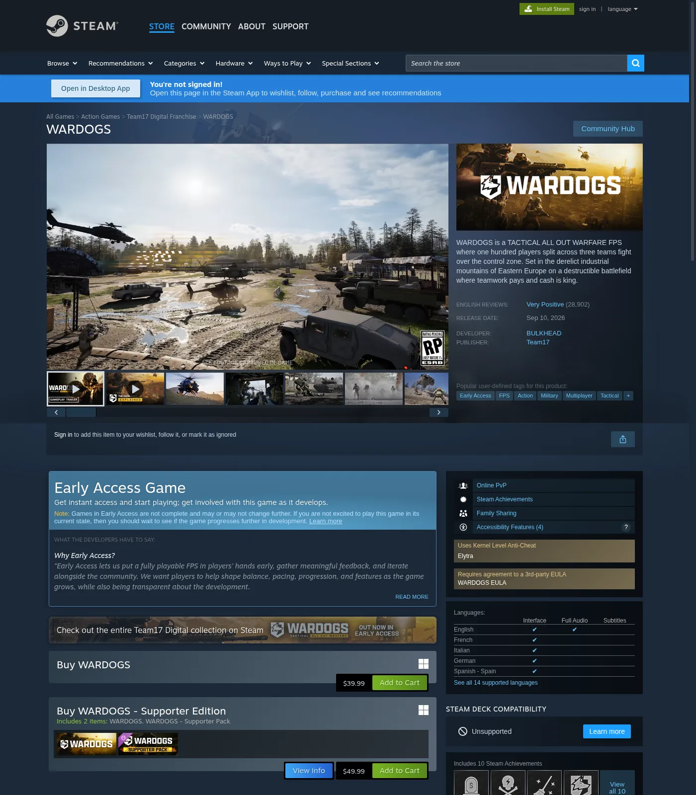
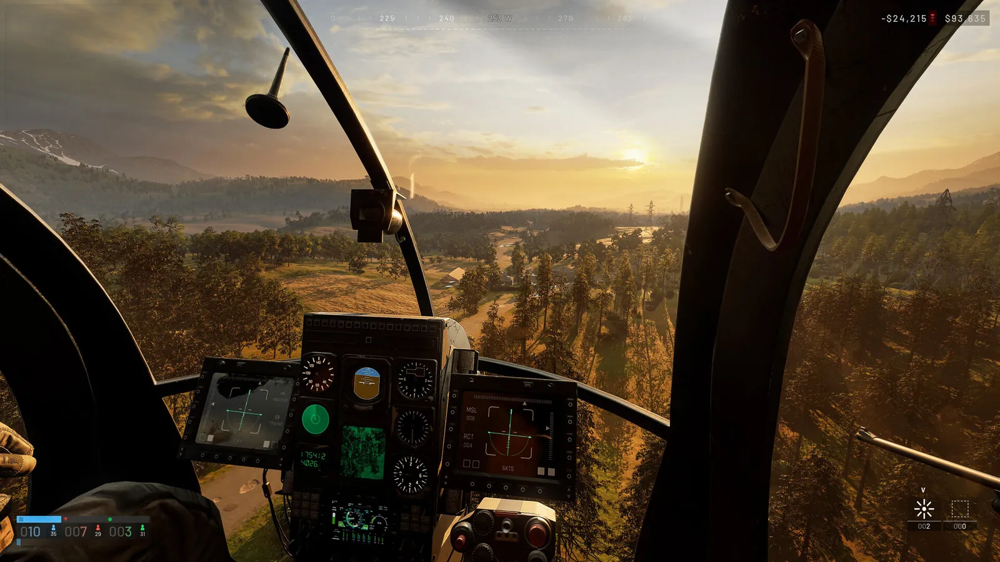

Last checked 14 Sep 2026 · Steam Early Access. Guides may change after patches.
WARDOGS Settings: FPS vs Clarity on Steam Early Access
TL;DR: WARDOGS Early Access (Steam, PC Windows, since Sep 10 2026) needs a goal-first settings path: max FPS for fight pacing, or max clarity for spotting across Control Zones and towers — not a copied “+X% FPS” preset. This is a public-source Early Access guide: decision trees, third-party named-option leads (Hone / 2UpSkill / PixelNitro / dtgre), and low/mid/high skeletons. We omit unconfirmed in-client menu labels and any invented FPS percentages until we confirm them on a live build. Store anti-cheat is Elytra (kernel-level); overlays that fight Elytra belong on the Crash page. Do not trust blogs that mislabel the AC as Easy Anti-Cheat. Store match framing: ~100 players / 3 teams, Control Zone ~2×2 km, first to 100 points.
Last checked 2026-09-13 (Early Access).


If the client never reaches Settings, stop and use WARDOGS Crashing / Won’t Launch. First-match loop: How to Play WARDOGS and Controls.
What this page covers (and what it refuses to invent)
| Covered | Not invented |
|---|---|
| Goal: FPS vs clarity tradeoffs | Any “+X% FPS” or fabricated 1% lows |
| Low / mid / high starting skeletons | Fake FIXED claims after a patch |
| Third-party named settings as leads | Claiming those labels are official without screenshot |
| Overlay conflict → Crash spoke | Exact EA menu names before screenshot capture |
| Retest checklist after Hotfix / patch | Hardware FPS leaderboards |
Platform fact (store, dated): PC Windows Steam Early Access. Elytra anti-cheat tag on store as of 2026-09-13 WebFetch.
| Field | Public source (2026-09-13) |
|---|---|
| Platform | PC Windows Steam Early Access |
| Anti-cheat | Elytra (kernel-level store feature tag — not Easy Anti-Cheat) |
| Match framing | ~100 players / 3 teams; Control Zone ~2×2 km; first to 100 points (Steam store) |
| Why settings matter here | 100-player Control Zone fights plus Hot Zone (store: double cash) stress effects / post more than pretty lighting |
| Measured FPS / 1% lows | Omitted — we do not invent percentages |
Decision tree: pick FPS, clarity, or balanced
Start → Can you open Settings without crash/black screen?
NO → ../wardogs-crashing/ (Elytra / launch / overlay)
YES → What hurts more in fights?
├─ Frame drops / hitching → Maximum FPS path
├─ Can’t spot players / vehicles past mid-range → Clarity path
└─ First day, unknown PC → Balanced baseline (below)
| Goal | Prefer (direction only) | Trade away | Evidence rule |
|---|---|---|---|
| Maximum FPS | Lower expensive families first (shadows / effects / post / GI) one at a time | Pretty reflections and heavy lighting | Change one family; note feel — no % |
| Competitive clarity | Kill blur / grain / DoF if present; keep view / mesh readable for towers | Cinematic bloom / film look | Spot test at towers / Hot Zone edge |
| Balanced Day-1 | Mid-tier skeleton | Extreme Ultra or Ultra-low | Revisit after 2–3 matches |
Do not call one preset “best for every PC.”
Third-party named options
Public Sep 2026 guides name many sliders. Treat as third-party until live screenshot. Conflicts stay visible.
Display / latency family
| Setting (third-party) | Hone (Sep 11) | 2UpSkill / PixelNitro / dtgre | Conflict / note |
|---|---|---|---|
| Resolution | Native | Native | Consensus lead |
| V-Sync | Disabled for first latency test | Off | Consensus lead |
| Frame Generation / DLSS FG | Off for baseline | Off | Consensus for latency-first |
| Frame Limit / Cap | Stable cap or uncapped for comparison | Cap near refresh (e.g. ~3–4 under Hz with VRR — Hone) | Cap vs Unlimited conflict |
| Main Menu FPS Limit | 60 (Hone) | — | Menu-only; verify exists |
Graphics quality family
| Setting (third-party) | Competitive lead | Notes |
|---|---|---|
| Overall Quality | Custom | Avoid auto presets silently rewriting |
| Mesh Detail / Mesh Quality | Medium (Hone); Medium/High (2UpSkill) | Keep readable for towers |
| View Distance | High | Cut late — spotting matters |
| Shading | Low (Hone); Low/Medium (others) | — |
| Global Illumination | Disabled / Off | Repeated “big cost” claim — unmeasured here |
| Shadows | Low | Do not invent “competitive advantage %” |
| Reflections | Low / Off | — |
| Effects | Medium then Low in heavy fights | Hot Zone / explosions stress |
| Particle Spawn Rate | Low | Separate from Effects on some menus (Hone) |
| Post-Processing | Low / Off | Clarity |
| Motion Blur | Disabled | Clarity |
| Depth of Field | Disabled | Some older guides left DoF on — conflict |
| Lens Flare / Bloom | Disabled | Clarity |
| World / Character Textures | High if VRAM allows | No invented GB cutoffs |
| Effects Textures | Medium (Hone) | Distinct row if present |
| Texture Streaming / Filtering | High/default; Filtering Medium | Traversal hitch lead |
| Anti-Aliasing Method | DLSS path on RTX; vendor option on AMD | Exact AMD label varies |
Largest observed FPS change: omitted. Never invent a percentage. Forbid copied “+X% FPS.”
Community conflict table (settings)
| Topic | Source A | Source B | Stance |
|---|---|---|---|
| Exclusive vs borderless | PixelNitro: Exclusive Fullscreen | Hone: Windowed Fullscreen; unsettled | Test both; no forever winner |
| Reflex Boost | Hone: don’t default Boost | PixelNitro: Enabled + Boost | A/B on your GPU clocks |
| GI Off vs Low | Most: Off/Disabled | PixelNitro snippet: Low | Prefer Off for FPS path until measured |
| DoF | Most: Off | Older Sportskeeda-class left On | Clarity path → Off if present |
| Frame cap | Cap to Hz / slightly under VRR | Unlimited for comparison | Document hitching either way |
| Anti-cheat name | Steam store: Elytra | Hone blog mentions Easy Anti-Cheat in one note | Trust store Elytra; treat blog AC mislabel as error |
| Official PC targets | Hone cites min 1080p Low 60 with upscaling; rec 1440p Medium 70+ / 4K Medium 60+ upscaled | Store/system requirements pages | Developer targets ≠ your 100-player lows |
Recommended baseline settings
Third-party EA blogs disagree on Shadows, Depth of Field, and frame cap. Treat common directions as leads, not truth.
We omit a publishable in-client baseline table until we screenshot live Video / Graphics labels. Use the third-party named-options tables above as leads, not truth.
How to read a settings menu (process): start from Custom so an auto preset cannot silently rewrite rows; change one family; re-run the same Control Zone sightline (~2×2 km, ~100 players). Keep the change only if the goal (FPS feel or spotting) improved. Do not copy a “+X% FPS” blog preset.
Visibility / clarity checklist (spotting, not “pretty”)
Control Zone fights (store: ~2×2 km, first to 100 points, 100 players / 3 teams) punish muddy post-process more than missing ray-traced gloss.
We omit an option-by-option presence table until we confirm which post-process toggles exist on the live EA menu. Clarity path if a blur / grain / DoF / bloom control is present: turn it off, then re-spot infantry and a vehicle silhouette at tower range. Maps in rotation on the MetaForge hub capture (2026-09-13): Bakurani, Ozeti, Zestafona — all listed Playable now.
Clarity smoke test (no FPS%):
- Join a quiet edge of the Control Zone spawn flow.
- Spot infantry at mid-range and a vehicle silhouette.
- Toggle one post-process option; keep the change only if spotting improves.
- Repeat near a tower sightline (see Towers / Hot Zone).
Low-, mid-, and high-end skeletons (not measured presets)
Publish as skeletons until hardware + screenshots exist. Do not fill invented FPS columns.
Symptom → first lever (Hone-style, no %)
| Symptom | First lever (one at a time) |
|---|---|
| Lower render res clearly raises FPS | Quality upscaling → then GI → Reflections |
| Busy fights hurt; res change barely helps | Effects / Particle Spawn Rate → then View Distance / Mesh |
| Hitches grow after long traversal; memory fills | World/Character textures one step → Texture Streaming |
| Spikes on first run after update | Warm once; separate first-run data; check driver/build |
| Stable local FPS but rubber-banding | Network / server — not graphics |
Per-tier checklist (print / copy)
Low-end
- [ ] Native or one step down resolution only if UI stays readable
- [ ] Fullscreen vs borderless: pick the stable one for your GPU driver
- [ ] Shadows / GI / effects / post → lowest that doesn’t break readability
- [ ] Cap to display Hz if Unlimited hitching
- [ ] Disable Discord/NVIDIA/Steam overlay for a control match → Crash page if still unstable
Mid
- [ ] Start from Balanced baseline table
- [ ] Clarity: blur/DoF/grain off if present
- [ ] Raise textures before shadows
- [ ] Re-test after one Hot Zone fight (store: Hot Zone can double cash — denser action)
High-end
- [ ] Clarity path first
- [ ] Cap optional for thermals / consistency
- [ ] Log any setting that uniquely tanks 1% lows on your GPU
First-launch stutter and shader compilation
Community leads say first boot can hitch while shaders compile. We do not publish a timed “shader fix” or an FPS% claim. If the process exits or never reaches the menu, treat it as a crash and use WARDOGS Crashing / Elytra. If it only hitch-stutters then settles, warm once after a patch or driver update and separate that first-run data from later matches.
| Observation | What to do |
|---|---|
| Hitch then reaches menu | Wait on a quiet screen; log that it was first-run |
| Recurs after patch / driver | Warm once more; do not invent a duration |
| Exits / never reaches menu | Treat as crash → Crashing |
Overlays and background apps → Crash spoke
Graphics tweaks will not fix Elytra launch failures, Access Denied after Hotfix, or join timeouts. If FPS “fixes” coincide with crashes, isolate overlays first.
| Item | Why isolate | Action |
|---|---|---|
| Discord overlay | Often cited in UE-style launch / access-violation writeups | Disable → retest; deep path on Crash |
| Steam overlay | Inject / focus steal | Disable for a control match |
| GeForce Experience / AMD overlay | Vendor overlay ≠ the driver | Disable overlay; keep the driver |
| Browser + downloads | Bandwidth + CPU steal | Pause while testing |
| External FPS injectors / RTSS | Third-party warn AC / overlay conflicts | Prefer an in-game limiter first |
Rule: Overlay conflicts that prevent launch or hard-crash mid-match go on WARDOGS Crashing (Elytra-aware). This Settings page only covers after you can stay in a match.
FAQ
Q: Which live-build settings produce the largest observed FPS change?
A. Measure on a dated build. Never publish a copied “+X% FPS” claim from Sportskeeda/Overgear/2UpSkill/Hone-class posts.
Q: What FPS cap should I use?
A. Cap advice conflicts (refresh-rate vs Unlimited). Pick from your display Hz, tearing, and 1% low feel — or leave Unlimited and document hitching.
Q: Which settings improve visibility rather than image quality?
A: Kill motion blur, film grain, heavy DoF/bloom if present; keep mesh/view distance readable for tower sightlines. We omit unconfirmed menu labels until a live screenshot.
Q: Is first-launch stutter or shader compilation normal?
A: Community leads say first boot can hitch. Time it on your install — we do not publish a fake duration. If the process exits, use the Crash hub, not more graphics cuts.
Q: Are there useful low-end and high-end presets?
A: Skeletons above only. Publish numbered presets only with hardware notes and screenshots. Otherwise keep a single baseline labeled as a public-source skeleton.
Q: Exact menu names and values?
A: We omit unconfirmed menu labels until a live Video / Graphics screenshot. Third-party names in the lead tables are not proof.
Q: DLSS / FSR / Frame Generation?
A: Third-party consensus: Quality upscaling when GPU-limited; Frame Generation Off for latency baseline. Confirm options exist on your GPU.
Q: Do overlays hurt FPS or stability?
A: Isolate Discord / Steam / GeForce one at a time. Stability failures → Crashing. FPS feel changes stay here.
Q: Will lowering settings fix Error 1628505091 or Access Denied?
A: No. Join timeout / auth / queue codes are Fix-hub problems — see Error Codes Hub and Servers. Graphics settings do not create server capacity.
Q: Does Elytra change which settings I should pick?
A: Store tags Elytra (not EAC as current). Elytra affects launch/AC health, not your Shadow slider. Repair/identify paths stay on Crash.
Also read
- WARDOGS Crashing or Won’t Launch (Elytra) — overlays, launch failures, AC
- WARDOGS Controls — Keyboard, Partial Controller, HOTAS — binds, FOV-adjacent input
- How to Play WARDOGS (First Match) — after settings are stable
- WARDOGS Error Codes Hub — if “performance” is actually a join/auth dialog
Sources
- Steam store WARDOGS (AppID 1867240) — Elytra tag; PC Windows; EA Sep 10 2026; Control Zone / Hot Zone marketing — https://store.steampowered.com/app/1867240/WARDOGS/
- Steam Launch Stability Hotfix #1 — https://steamcommunity.com/app/1867240/discussions/0/562541634873654728/
- Hone — Best PC Settings for FPS (Sep 11, 2026) — third-party named options — https://hone.gg/blog/wardogs-best-pc-settings/
- 2UpSkill — Best FPS Settings 2026 — https://2upskill.com/wardogs-best-fps-settings-2026-competitive-optimization-guide/
- PixelNitro — Lag / stuttering fix — https://pixelnitro.com/wardogs-lag-and-stuttering-fix-guide-how-to-boost-fps-and-fix-1-lows-in-2026/
- dtgre — Best settings low/mid/high — https://www.dtgre.com/2026/09/wardogs-best-settings-fps-visibility-low-mid-high-end-pc.html